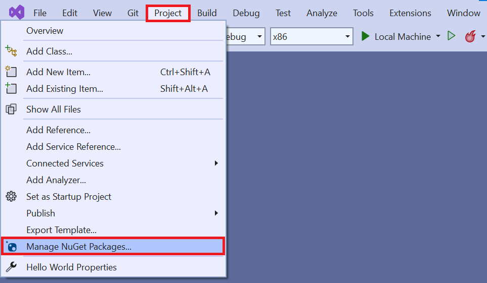
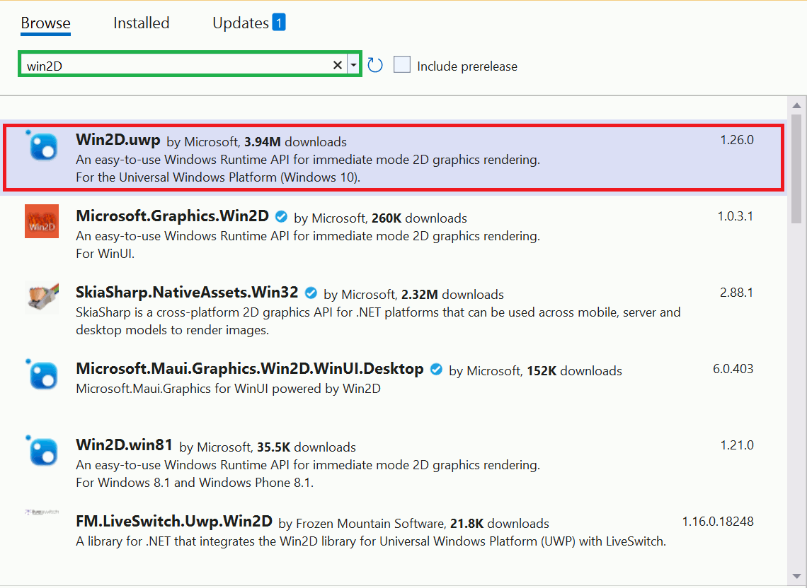
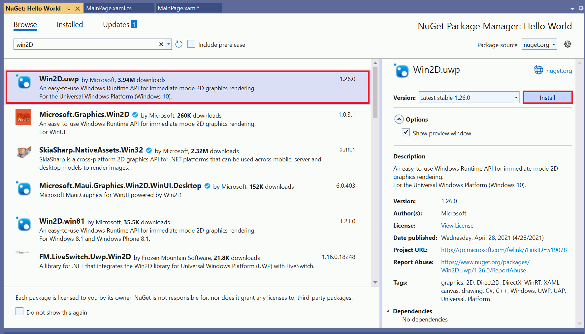
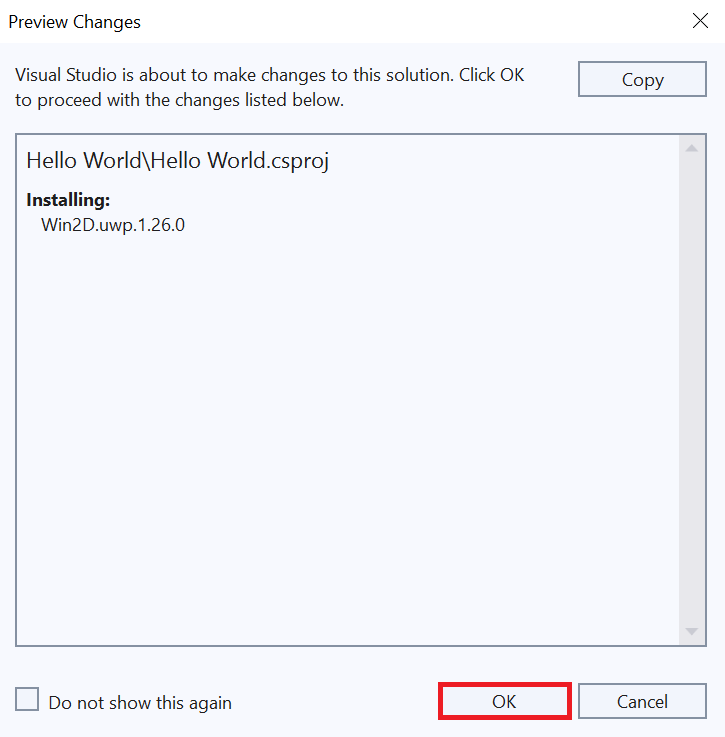
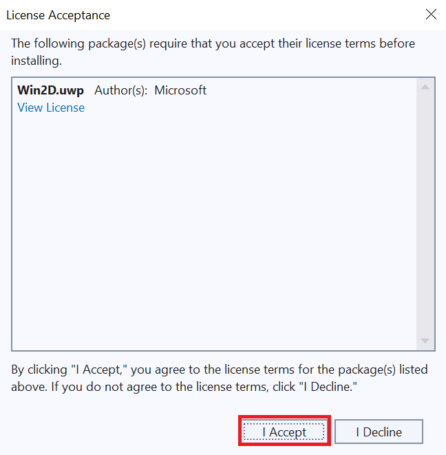
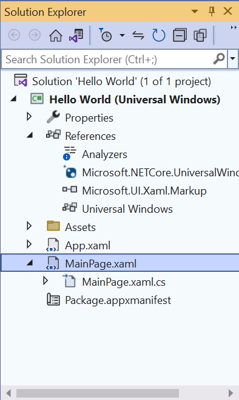
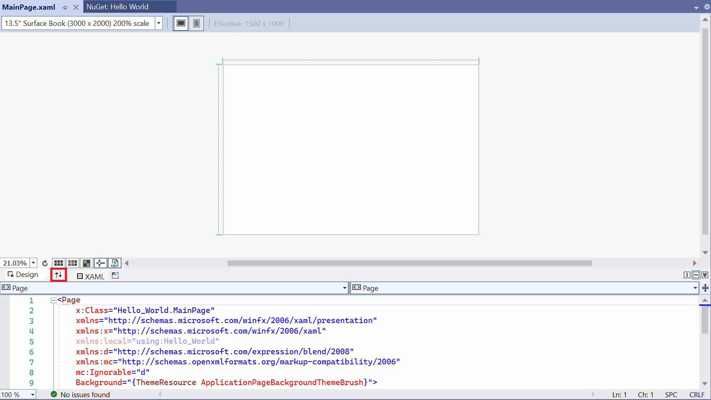
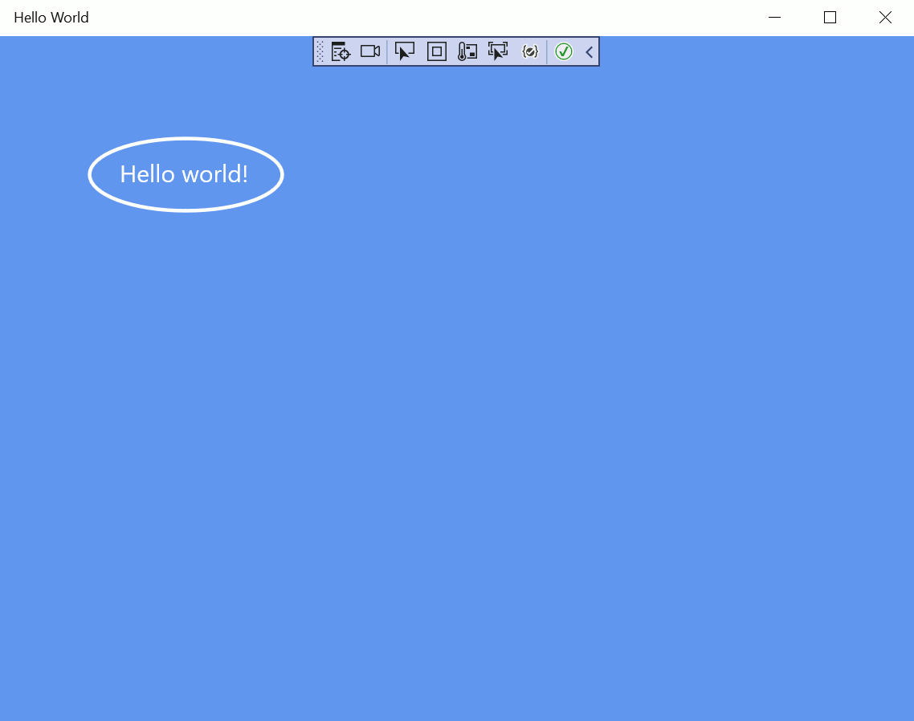

Using NuGet to add functionality to your app
NuGet is the package manager for .NET, UWP, Windows Forms, and WPF projects. Browse the package catalog with NuGet to install, update, or delete packages from your project.
Developers share libraries and resources by bundling their work into packages. You can pull a package into Visual Studio to provide extra functionality to projects. For example, to add support for JSON or add animation routines to XAML.
NuGet is built into Visual Studio, so you don't have to leave the IDE.
Install a NuGet package
Let's use NuGet to install new XAML animation features from the Win2D package:
- Click Project, and then select Manage NuGet Packages. 
- Click Browse, type Win2D in the search box, and press Enter. A list of available packages displays. 
- Select the Win2D.uwp package from the list and click Install. The package begins installing. 
- Click Project.
- Select Hello World Properties.
- Change the Min Version to Windows 10.
- A Preview Changes window displays. Click OK. 
- A License Acceptance window displays. To agree to the license terms, click I Accept. 
- Double-click MainPage.xaml in the Solutions Explorer to open it in design view. 
- Use the Arrows button to expand the editing view. 
- Replace all of the XAML code in MainPage.xaml with this code:
- Replace all of the C# code in MainPage.xaml.cs with this code:
- Run your program to see the results.
With the package installed, we can call a feature directly in the XAML code to define our main page.
NOTE
If you get an error during installation, you might not have set the correct minimum version.
<Page
x:Class="Hello_World.MainPage"
xmlns="http://schemas.microsoft.com/winfx/2006/xaml/presentation"
xmlns:x="http://schemas.microsoft.com/winfx/2006/xaml"
Background="{ThemeResource ApplicationPageBackgroundThemeBrush}"
xmlns:canvas="using:Microsoft.Graphics.Canvas.UI.Xaml">
<Grid>
<canvas:CanvasControl Draw="CanvasControl_Draw" ClearColor="CornflowerBlue"/>
</Grid>
</Page>
using Windows.UI;
using Windows.UI.Xaml.Controls;
using Microsoft.Graphics.Canvas.UI.Xaml;
namespace Hello_World
{
public sealed partial class MainPage : Page
{
public MainPage()
{
this.InitializeComponent();
}
void CanvasControl_Draw(CanvasControl sender, CanvasDrawEventArgs args)
{
args.DrawingSession.DrawEllipse(155, 115, 80, 30, Colors.White, 3);
args.DrawingSession.DrawText("Hello world!", 100, 100, Colors.White);
}
}
}
This XAML code includes a reference to the package we installed earlier.

You should see an ellipse circling the text "Hello world!" on a blue background.
